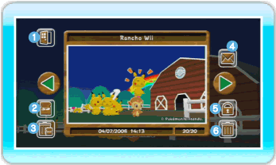
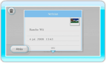

20 |
Álbum |
 |
Podrás ver las fotos que saques del rancho o enviar fotos al tablón de Wii. Se puede guardar un máximo de 20 fotos en el Álbum. También podrás guardarlas en una tarjeta SD. Nota: Si sacas más de 20 fotos, las fotos más antiguas se borrarán automáticamente. ● Ver el Álbum Si seleccionas Álbum en el menú principal, accederás a la pantalla del Álbum. Para cambiar de foto, apunta hacia las flechas verdes de los lados y pulsa  Atrás
Abandonar la pantalla del Álbum. Guardar en una tarjeta SD
Guardar las fotos de My Pokémon Ranch en una tarjeta SD. Nota: Las fotos se guardarán en formato JPEG. No podrás volver a incorporar al Álbum las fotos que guardes en una tarjeta SD, pero podrás visualizarlas en el Canal Fotos o en tu ordenador. Nota: Los derechos de autor de todas las imágenes sacadas en My Pokémon Ranch son propiedad de The Pokémon Company y terceros. Cumple siempre las normas de uso que establezca la ley. Borrar todas las fotos de la tarjeta SD
Selecciona esta opción para borrar todas las fotos de My Pokémon Ranch guardadas en la tarjeta SD. 
Enviar al tablón de Wii
Podrás enviar fotos al tablón de Wii y verlas allí. Proteger / Desproteger
Gracias a esta opción podrás proteger o desproteger una foto. La foto que protejas no se podrá borrar. Puedes proteger un máximo de 19 fotos. Borrar
Elige esta opción para borrar la foto que esté seleccionada en ese momento.
|
 , pulsa izquierda o derecha en
, pulsa izquierda o derecha en  o utiliza
o utiliza  o
o  .
. |
 |
 |